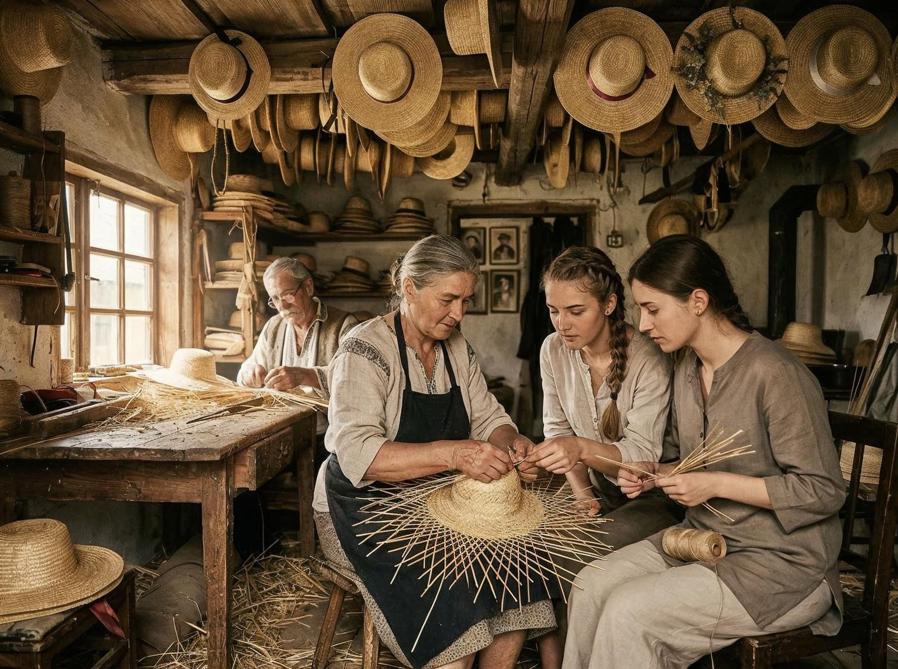
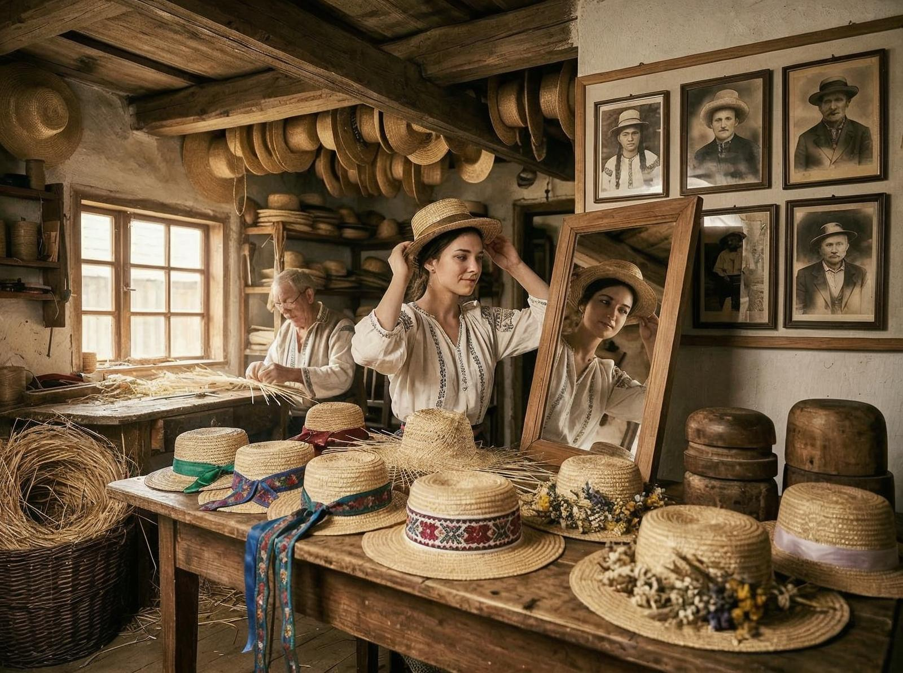

Coordonatele îmi sunt notate în agendă: 46° 12′ 48″ N 25° 18′ 36″ E. Crișeni. Sat în comuna Atid, județul Harghita. Un loc simplu, dar locul e orice altceva decât simplu. E muzeu. E tradiție. E istorie.
Puțini știu că Muzeul Pălăriilor de Paie din Crișeni a fost înființat în anul 2001 la inițiativa familiei Lajos Szocs, familie cu o tradiție de peste 170 de ani privind confecționarea pălăriilor și obiectelor decorative de paie. Nu e doar un muzeu. E o casă țărănească tradițională renovată, care a devenit templu al unei meserii.
Interesant e că muzeul prezintă o tradiție care e unică în țară. În prima încăpere pot fi văzute toate modelele de pălării de paie din țară. Dar nu doar pălării. Obiecte decorative. Obiecte de artă. Totul lucrat 100% manual, din paie.

Și iată ce e fascinant: în 2024, muzeul a intrat în Cartea Recordurilor. Nu pentru că are multe pălării. Pentru că are cea mai mare pălărie purtabilă din lume. Da, exact. Cea mai mare pălărie purtabilă din lume e în Crișeni, Harghita.
Detaliul care contează e că muzeul nu e doar despre recorduri. E despre oameni. E despre o familie care a continuat o tradiție de patru generații. E despre un meșteșug care supraviețuit în ciuda globalizării, a plasticului, a tot ce a încercat să-l înlocuiască.
Problema e că puțini știu de el. Muzeul e într-un sat din Harghita. Nu e pe drumurile principale. Nu e în ghidurile turistice. E acolo, într-o gospodărie rurală, așteptând să fie descoperit.

Și totuși există. E acolo, în Crișeni, păstrând o tradiție de 170 de ani. Oamenii vin, admiră, învață, pleacă. Se întorc. Învață din nou. E un ciclu care continuă, chiar dacă nu e massiv.
Fără idealizări. E realitate, nu basm. Tradiția are nevoie de continuare. Meșteșugul are nevoie de ucenici. România are nevoie să învețe că bogăția nu e doar în ce importăm, ci și în ce creăm local.
România profundă nu e doar un clișeu. E reală — sate, gospodării, meșteșuguri pe care le-am uitat. Crișeni e dovada că tradiția poate supraviețui.
Probabil că nu putem să ne întoarcem la același nivel. Dar putem învăța. Putem învăța că meșteșugul nu e doar un hobby. E identitate. E economie. Și că, uneori, cele mai importante lucruri sunt cele pe care le-am uitat.
Crișeni e o amintire. O amintire a ceea ce am creat, ceea ce am continuat, ceea ce am învățat. Și o amintire a ceea ce putem fi, dacă învățăm din trecut.